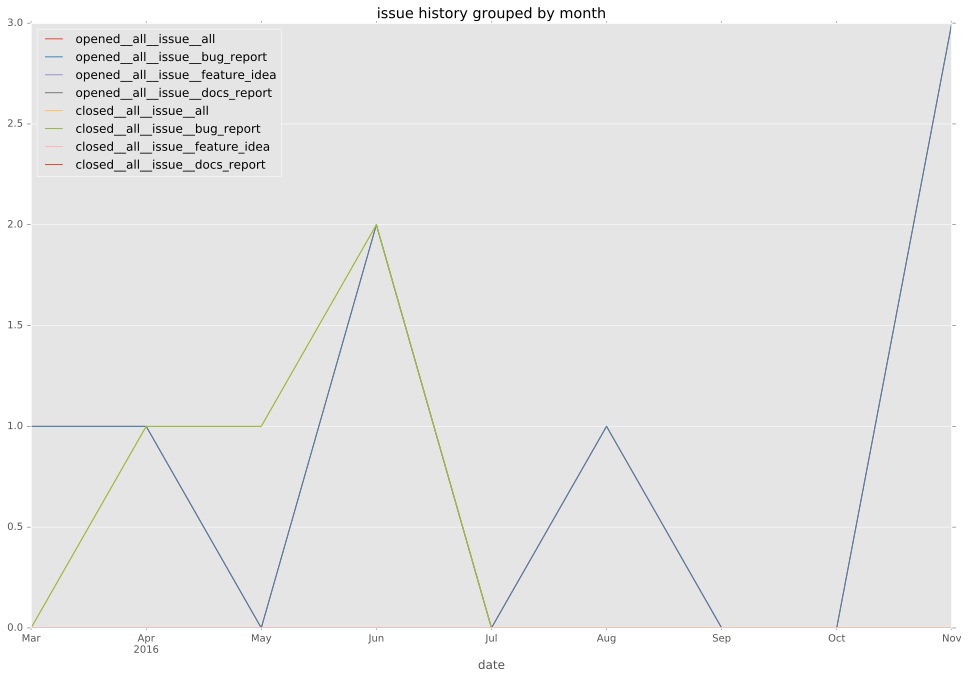
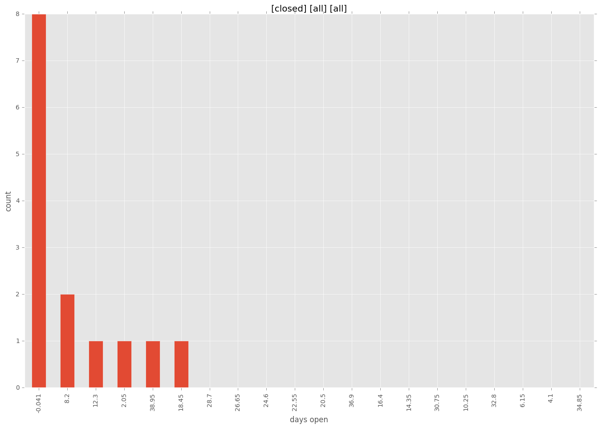
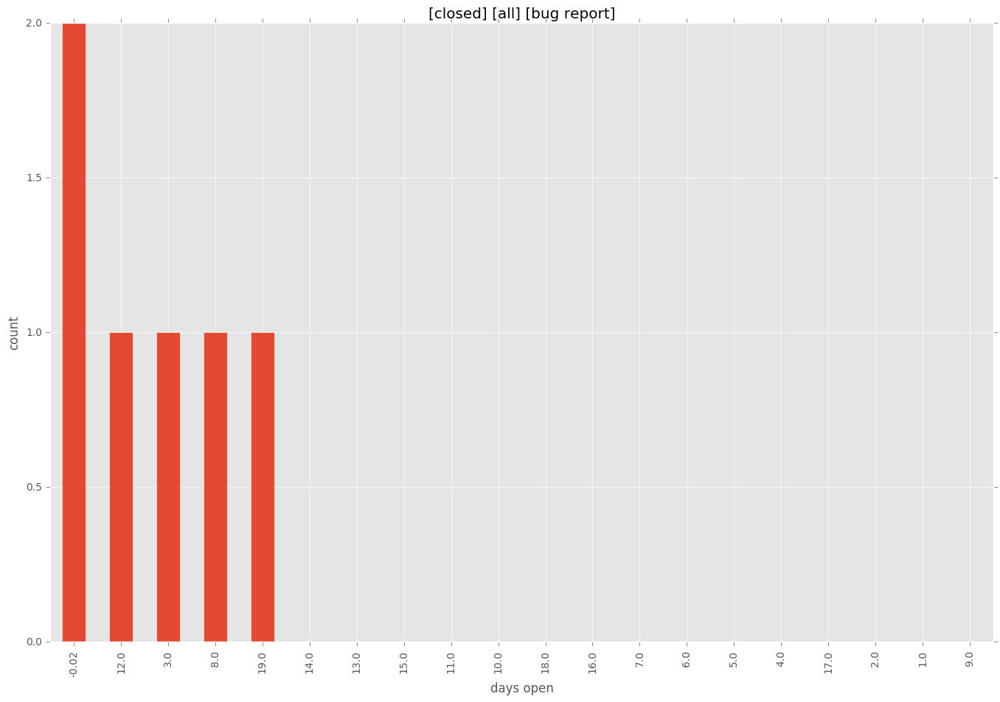
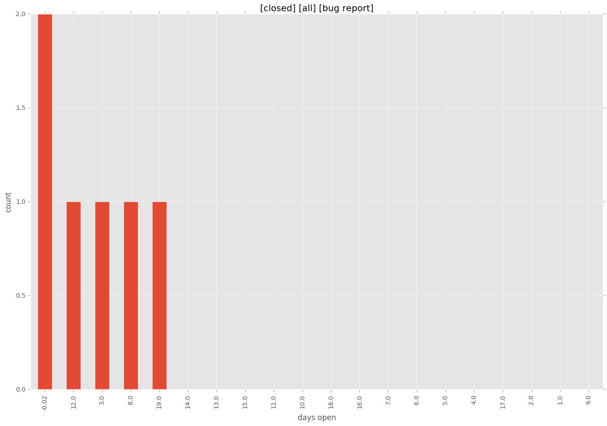
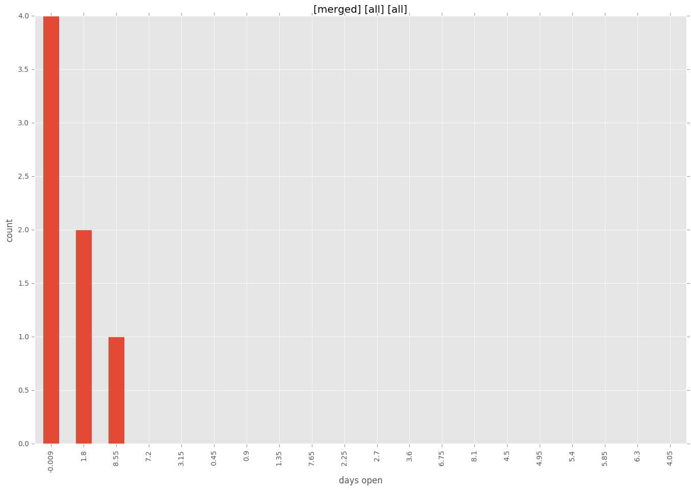
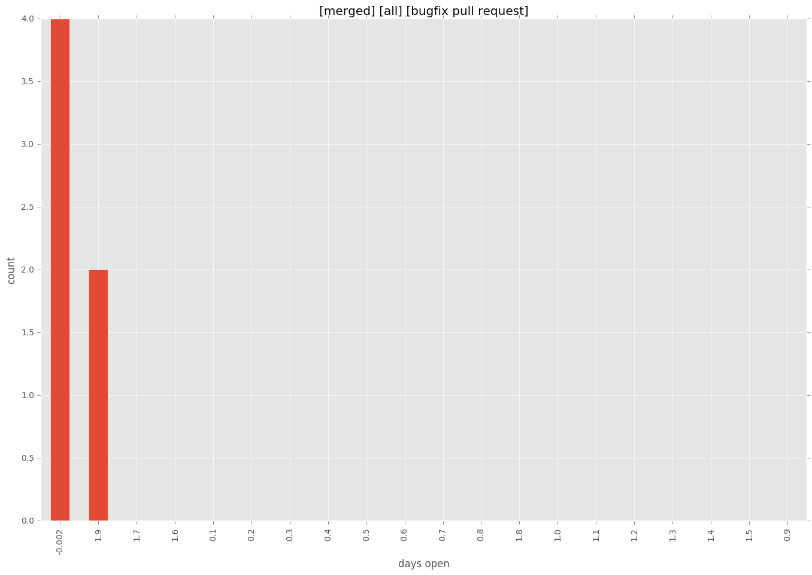
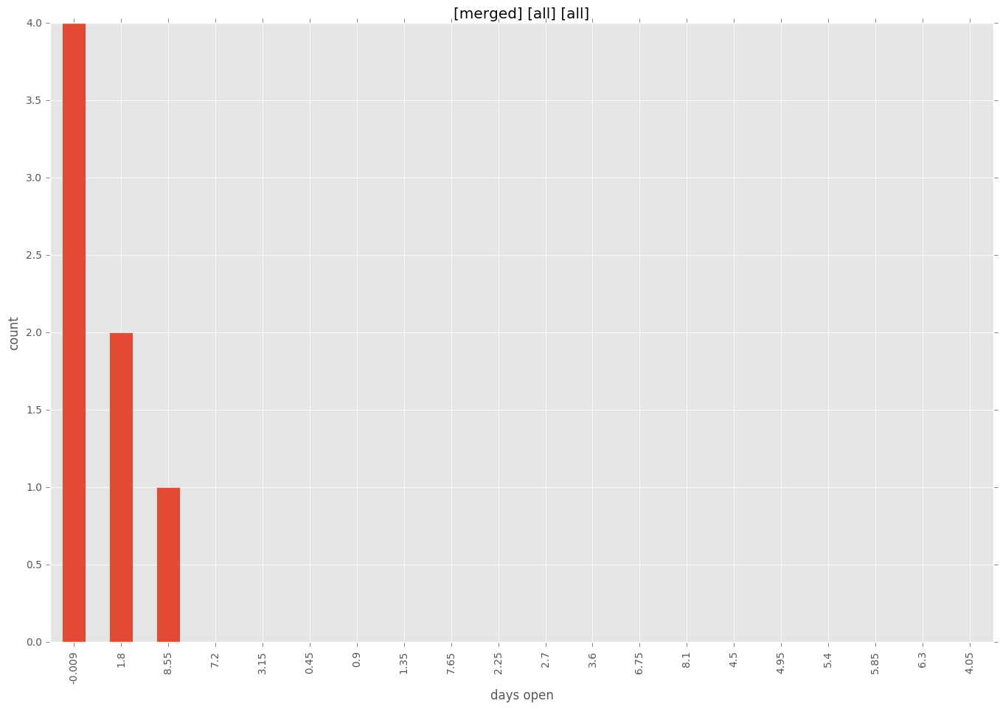
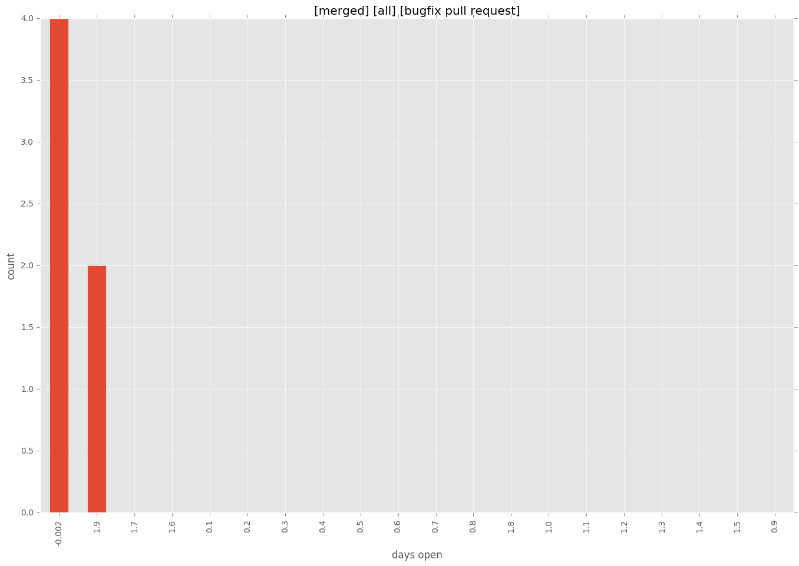

total issue counts
bugfix pull request: 6
pullrequest: 8
issue: 7
new plugin: 2
bug report: 7
issue history

days open by issue type
all
count: 21
std: 9.76509820008
min: 0
max: 41
median: 2.0
mean: 5.42857142857
pullrequest
count: 0
std: nan
min: nan
max: nan
median: nan
mean: nan
bugfix pull request
count: 12
std: 0.984731927835
min: 0
max: 2
median: 0.0
mean: 0.666666666667
issue
count: 0
std: nan
min: nan
max: nan
median: nan
mean: nan
new plugin
count: 3
std: 18.4752086141
min: 9
max: 41
median: 9.0
mean: 19.6666666667
bug report
count: 6
std: 7.73089041875
min: 0
max: 20
median: 6.5
mean: 7.83333333333
closures grouped by total days open

 


 


